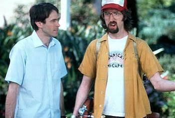

💰🎓🐕STEALING HARVARD (2002) — CERTIFIED MGC G-8

🏛 MGC LOWER COURT OF APPEALS
- ASSET TITLE: Stealing Harvard (2002) – The Early-2000s Slapstick Caper Planchet
- OFFICIAL REGISTRY GRADE: Certified MGC G-8 (Good / Heavily Circulated Comedy Alloy)
- LOWER COURT JURISDICTION: Judge Tina (Chief of Cult Classics)
- CASE FILE: #100
📜 THE FORENSIC NARRATIVE BREAKDOWN & RECOVERY
Tina walks up 👢👢 to the cold steel bench, tosses a crumpled fast-food bag into the trash can 🗑, and dials her 5x magnifying lens onto this milestone 100th case file.
1. Contrived Caper Die & Premise Friction
- Under our strict 5x numismatic magnifying lens, Bruce McCulloch’s 2002 comedy exhibits unmistakable early-2000s structural wear right out of the press. The narrative hinges on straight-laced John Plummer (Jason Lee) promising to pay his niece’s $30,000 Harvard tuition, only to find his savings locked down by his fiancé’s demanding family—forcing him into a string of amateur robberies with his unhinged best friend Duff (Tom Green). While the setup delivers classic buddy-heist momentum, the screenplay leaks engine oil through paper-thin plot logic and contrived, sitcom-grade misunderstandings that stall the caper engine every time the characters try to act like real human beings.
2. Uncalibrated Tom Green Static vs. Elite Character Metallurgy
- Inspecting the performance surface under high magnification reveals a sharp split in the metal. Tom Green’s hyperactive, loud-mouthed shtick acts like heavy surface oxidation—it either charms midnight-movie collectors or wears down the edges with repetitive, loud-volume comedy fatigue. However, the planchet avoids dropping into the lower G-4 or G-5 junk bins thanks to a surprisingly stacked supporting roster. Jason Lee plays the frazzled straight man with genuine comedic timing, while Dennis Farina, Megan Mullally, Chris Penn, and John C. McGinley bring high-grade character-actor luster that rescues entire scenes from script collapse.
3. The Definitive G-8 High-End Good Allocation
- This milestone 100th specimen climbs right to the upper edge of the G-8 Good register—sitting just two steps below the VG-10 threshold. Even though the gross-out gags (including the infamous prize-dog subplot) leave noticeable handling scuffs across the second act, the sheer density of reliable supporting veterans and brisk 85-minute runtime keep the coin spinning smoothly enough to earn top-tier Good status.
⚖️ THE CHIEF’S FINAL DECREE
Tina grabs her heavy 12-inch crescent wrench and slams it onto the steel desk with a deafening metallic ring!
- “The heist logic has more holes than a rusted muffler, and Tom Green’s volume knob is stuck on eleven—but Dennis Farina and a killer supporting bench carry this 100th docket straight into the G-8 slot!”
- 🔧💥 🐕 Case Closed. Certified MGC G-8.

• © 2026 MOVIE GRADING CONSENSUS. All Sovereign Rights Reserved.